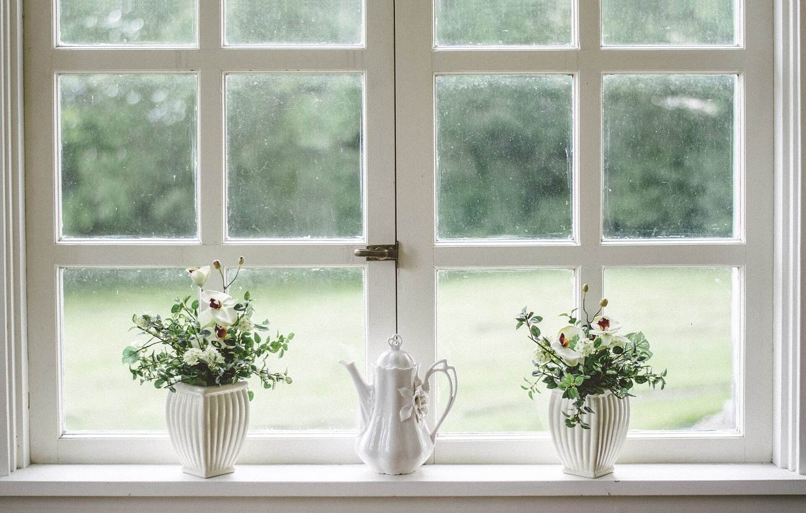

店のこと
確認できているのは所在地とInstagramだけ
お店の中身は、確認できてからご案内します。ここでは、このサイトの図の読み方を並べておきます。
図の読み方
原料から出口まで、左から右へ
図の左から右へ、原料が入り、溶け、通り道をくぐって、出口側の槽に着く順番に並べました。炎の口と蓄熱室は、溶かす槽を支える部分として、上と下に置いています。
- 1原料投入口
- 2溶解槽3 バーナーポート・4 蓄熱室が支える
- 5スロート
- 6作業槽
制作側の連想で、お店の理念・由来とは無関係です。一般的な窯炉を単純にした図で、実際の設備の仕様ではありません。
ギャラリー(イメージ)
棚とケースの写真



写真は焼き菓子やパンのイメージです。お店のものではありません。